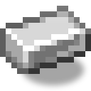

热力离心机
alaindustrial:thermal_centrifuge
概览
热力离心机是矿石翻倍的第二级。粉碎机已经把一块矿石变成两份粉；离心机再把每份粉一分为二，得到铀精矿，铀精矿再在压缩机中压制——两份铀精矿压成一份浓缩铀（U-235）。完整生产线的结果是：一块矿石方块产出四份铀精矿，也就是两份浓缩铀，而直接熔炼只有一块锭。
铀精矿是压制而成，而不是熔炼：熔炉本来就收铀粉，再让它多一条相似的路线，既不合逻辑（铀精矿该压紧，而不是熔化），也让人困惑——同一台机器里摆着两个相似的配方。
但仅仅放好并投入原料还不够。这是本模组第一台需要通电启动并提升转速的机器：它需要红石信号，以及正下方一台已经预热完毕的电热器。
小示例：放好电热器，在其上方放离心机，接上电缆，放入铀粉，然后拉下拉杆。转子开始提速，电热器开始升温。电热器会先一步就绪，大约十秒；而转子提速要花上两倍的时间——之后铀粉才会变成铀精矿。移走拉杆——机器停机，转速也随之清零。
能量
| 字段 | 数值 |
|---|---|
| 角色 | 消费端 |
| 缓存（EU/FE） | 800（） |
| 最大输入（EU/FE/刻） | 32（LV 上限） |
| EU/FE/刻（工作与提速时） | 4（） |
| EU/FE/刻（保持空转转速） | 1（） |
比本模组的普通机器贵一倍：离心机翻倍的是最稀有的资源，而且它从不单独工作，总要与电热器搭档。这一对合计取用 10 EU/FE/刻——这仍然塞得进铜缆（12 EU/FE/刻），但几乎没有余量，而这是刻意为之。
转速提升与信号
红石信号必须持续供给，而不是脉冲触发。这与小型生物驱逐器的逻辑相反——在那里信号让方块暂停；而这里信号是马达的启动按钮，对一台以旋转为本质的机器来说，把「没有信号」理解为「继续运转」毫无道理。
| 状态 | 条件 | 消耗 |
|---|---|---|
| 停机 | 没有信号 | 0 EU/FE |
| 提速中 | 有信号，转速尚未达标 | 4 EU/FE/刻 |
| 空转 | 转速达标，但没有可加工的东西 | 1 EU/FE/刻 |
| 工作中 | 转速达标，且有热量、原料与输出空位 | 4 EU/FE/刻 |
完整提速需要 400 刻（）——是电热器预热时间的两倍。电热器先一步就绪，机器则明显要等自己那份转动惯量：这正是离心机区别于其余机器、刻意做出的沉重转子手感。如果连空转所需的电力都不够，转子掉速的速率只有升速时的一半：短暂的电力中断不会把你打回零点。
切断信号则是彻底停机：转速立刻归零，而不是逐渐减速。拉杆在这里是整条生产线名副其实的总闸。
加热
只有电热器才行。对硫化机足够用的熔岩、岩浆和营火，都无法启动离心机：它的产出倍率是固定的，因此一套热量等级刻度会变成一个无处可拧的旋钮。只要下方的电热器还没升温，机器就会在状态行里如实说明——并且与「下方根本没有电热器」的情况分开显示。
加工
| 字段 | 数值 |
|---|---|
| 持续时间（刻） | 200（） |
| 每次操作耗能 | 800 EU/FE |
| 产出 | 1 份铀粉 → 2 份铀精矿 |
| 自动卸料 | 否 |
物品栏
| 槽位 | 接受 | 数量 |
|---|---|---|
| 输入 | 铀粉 | 每次操作 1 份 |
| 结果 | 铀精矿，仅可由机器放入 | 最多 64 |
底面被电热器占用，不对自动化开放——漏斗和管道从其余各面工作。
界面
类型：container 显示：能量储备、转子转速表、进度箭头。 状态行会说明缺什么："需要红石信号"、"下方需要电热器"、"电热器仍未升温"、"转速提升中"、"需要铀粉"、"没有匹配的配方"、"输出已堵塞"。之所以需要单独一行，是因为四个条件中有两个——信号与加热——在界面内部根本看不到。
方块属性
外壳是开放式框架：透过它能看见旋转的转子。但用于命中判定的形状是实心的，并且比完整方块略窄一些——如果按框架的镂空来切，点击就会直接穿过去。
| 字段 | 数值 |
|---|---|
| 形状 | 14×16×14，非遮挡方块 |
| 硬度 | 3.0 |
| 爆炸抗性 | 6.0 |
| 工具 | 镐 |
配方
合成： 离心处理： 压制铀精矿（两份合一）：
进阶
等级：LV 需要：机器外壳、电子电路、电热器以及一个红石信号源。 开启：铀精矿，以及经由压缩机得到的浓缩铀——面向未来核能分支的材料。
相关内容
电热器 — 下方必需的热源。 硫化机 — 使用同一台电热器的第二台机器。 粉碎机 — 翻倍的第一级，为它提供铀粉。 铀 — 整条链条为之存在的材料。
合成
有序合成

▶
热力离心机